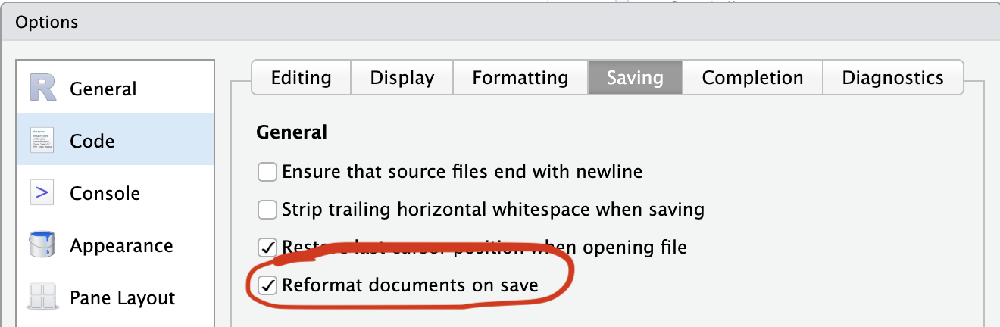

git pull
git pushGit/GitHub for Collaborative Development
Git Workflow Review
Make sure we have pushed all of our changes up to this point.
Pull Request Workflows
back to slides - PR workflow overview
The usethis PR helpers manage the full lifecycle of a pull request from your R console. We’ll use them for everything from here on - including setting up CI and Air.
The helpers you’ll use most:
pr_init("branch-name")- create and switch to a new branchpr_push()- push your branch and open a PR on GitHubpr_pause()- stash work and return tomainpr_resume("branch-name")- return to a branchpr_fetch(123)- check out someone else’s PR locallypr_finish()- clean up after a PR is merged
Continuous Integration
Start a branch
pr_init("add-ci")Add GitHub Actions for R CMD check
use_github_action()This creates .github/workflows/R-CMD-check.yaml that runs R CMD check on multiple platforms whenever you push.
It also adds a “R CMD check” status badge to your README. Look at your README.Rmd badges section, then rebuild, and check() locally.
build_readme()
check()
TipMake a commit
Push and open a PR
pr_push()This pushes your branch and opens a browser to create the PR. After the PR is opened, watch the Actions tab - CI will run on the PR branch before anything merges to main.
Merge and clean up
Once CI passes and the PR is merged on GitHub:
pr_finish()View your check results
After merging, go to your repo’s “Actions” tab to see the workflow run on main.
Setting Up Air
Air is a fast R formatter that automatically formats your code every time you save a .R file. It helps you keep your mind focused on the code, and most importantly eases collaboration because it forces a consistent style among you and your collaborators.
Start a branch
pr_init("use-air")Install Air in your project
use_air()In RStudio, change these settings:


Install the Air command line utility. Otherwise, the first time Air is run (i.e., the first time you save a file), it will be downloaded and installed automatically.
Format your whole project
In the terminal, run:
air format .Push and open a PR
pr_push()This pushes your branch and opens a browser to create the PR. After the PR is opened, watch the Actions tab - CI will run on the PR branch before anything merges to main.
While we wait for CI…Let’s leave this PR and start a new one!
pr_pause()Now we’re back on main and can start a new branch for the next feature.
Adding a New Function via PR
Now we’ll go through the full PR workflow for a real feature: adding a biomass_index() function to fishr.
Start a new feature branch
pr_init("add-biomass-function")Write a new function
use_r("biomass")Add a simple biomass calculation function:
#' Calculate Biomass Index
#'
#' Calculates biomass index from CPUE and area swept.
#'
#' @param cpue Numeric vector of CPUE values
#' @param area_swept Numeric vector of area swept (e.g., km²)
#'
#' @return A numeric vector of biomass index values
#' @export
#'
#' @examples
#' salmon_cpue <- cpue(catch = 2, effort = 2)
#' biomass_index(cpue = salmon_cpue, area_swept = 5)
biomass_index <- function(cpue, area_swept) {
cpue * area_swept
}Document and check
document()
load_all()
biomass_index(10, 5)
check()
TipMake a commit
Push your branch and create a PR
pr_push()This pushes your branch and opens a browser to create the PR.
Go back to the Air PR
Pause the biomass PR and return to main:
pr_pause(). . .
Now resume the Air PR:
pr_resume() # Choose the Air PR from the menu. . .
On Github, Merge the Air PR, then back in RStudio clean up the branch.
usethis::pr_finish()Now resume the biomass PR
pr_resume("add-biomass-function")Get the latest changes from main (including the now-merged Air PR):
pr_merge_main()Then push the updated branch:
pr_push()On GitHub, review the biomass PR and merge once CI is passing.
Finally, clean up the branch:
After PR is merged
pr_finish()